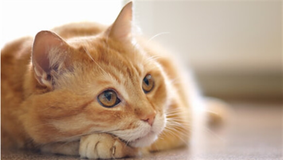
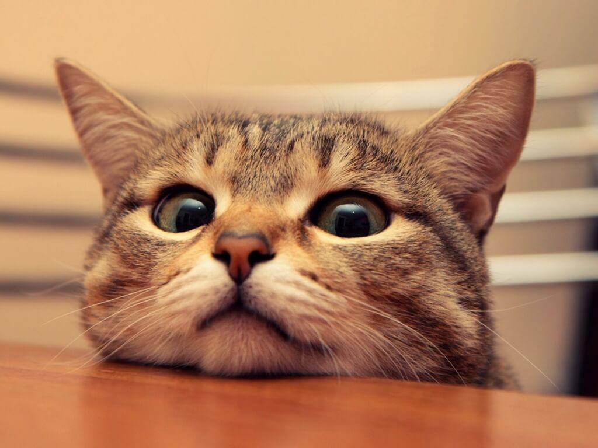
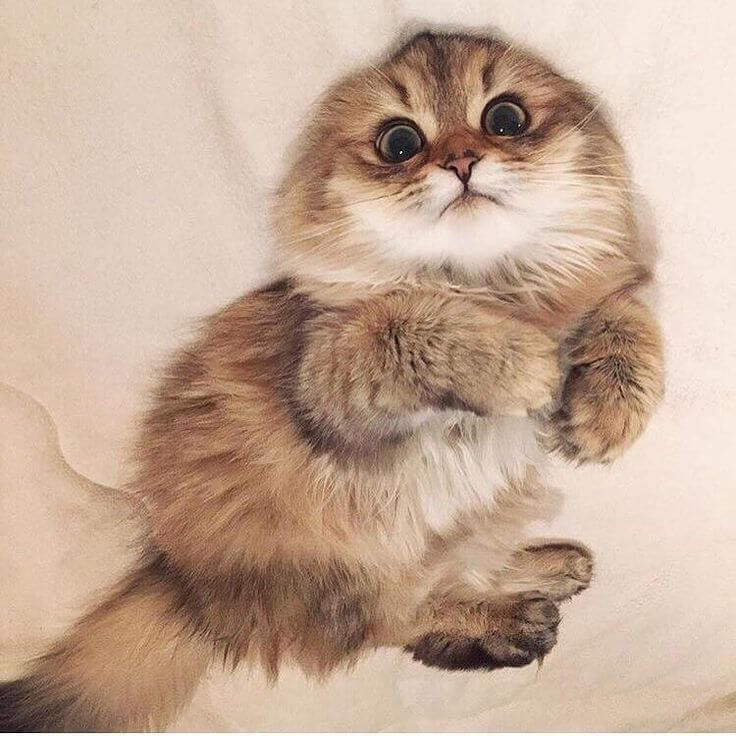
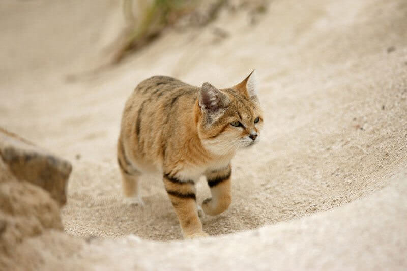
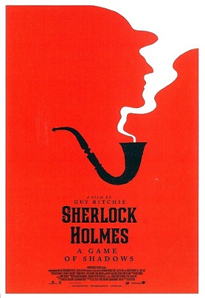

SECTION TWO
a short descriptionclick on the image to view more imformation





a short description
Sherlock is a crime drama television series based on Sir Arthur Conan Doyle's Sherlock Holmes detective stories. Created by Steven Moffat and Mark Gatiss, it stars Benedict Cumberbatch as Sherlock Holmes and Martin Freeman as Doctor John Watson. Thirteen episodes have been produced, with three-part series airing from 2010–2017, and a special episode airing on 1 January 2016. The series is set in the present day, while the one-off special features a Victorian period fantasy resembling the original Holmes stories. Sherlock is a co-production of the British network BBC and the American station WGBH Boston for its Masterpiece anthology series on PBS, along with Hartswood Films, with Moffat, Gatiss, Sue Vertue and Rebecca Eaton serving as executive producers. The series is primarily filmed in Cardiff, Wales, with North Gower Street in London used for exterior shots of Holmes and Watson's 221B Baker Street residence.
Sherlock Holmes
Critical reception has been highly positive, with many reviews praising the quality of the writing, performances, and direction. Sherlock has been nominated for numerous awards including BAFTAs, Emmys, and a Golden Globe, winning several awards across a variety of categories. The show won in three categories at the 66th Primetime Emmy Awards including Outstanding Writing for a Miniseries, Movie or a Dramatic Special for Moffat, Outstanding Lead Actor in a Miniseries or a Movie for Cumberbatch, and Outstanding Supporting Actor in a Miniseries or a Movie for Freeman. Two years later, it won Outstanding Television Movie. In addition, the show was also honoured with a Peabody Award in 2011.The third series has become the UK's most watched drama series since 2001 while interest in the fourth series appeared to slip by approximately twenty percent.Sherlock has been sold to 180 territories. All of the series have been released on DVD and Blu-ray, alongside tie-in editions of selected original Conan Doyle stories and original soundtrack composed by David Arnold and Michael Price. In January 2014, the show launched its official mobile app called Sherlock: The Network.
Sherlock depicts "consulting detective" Sherlock Holmes (Benedict Cumberbatch) solving various mysteries in modern-day London. Holmes is assisted by his flatmate and friend, Dr John Watson (Martin Freeman), who has returned from military service in Afghanistan with the Royal Army Medical Corps. Although Metropolitan Police Service Detective Inspector Greg Lestrade (Rupert Graves) and others are at first suspicious of Holmes, over time his exceptional intellect and bold powers of observation persuade them of his value. In part through Watson's blog documenting their adventures, Holmes becomes a reluctant celebrity with the press reporting on his cases and eccentric personal life. Both ordinary people and the British government ask for his help. Although the series depicts a variety of crimes and perpetrators, Holmes' conflict with nemesis Jim Moriarty (Andrew Scott) is a recurring feature. Molly Hooper (Louise Brealey), a pathologist at St. Bart's Hospital, occasionally assists Holmes in his cases. Other recurring roles include Una Stubbs as Mrs Hudson, Holmes and Watson's landlady, and series co-creator Mark Gatiss as Holmes' elder brother Mycroft.
a short descriptionclick on the image to view more imformation
a short description